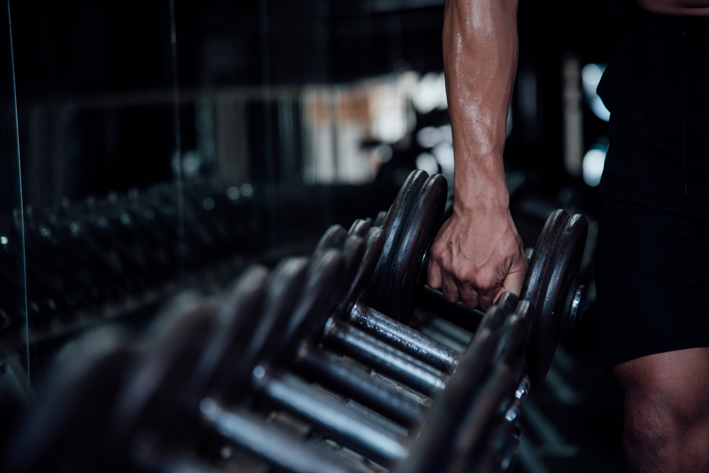

Doporučené cviky
- kliky na kolenou nebo o lavičku,
- dřepy bez zátěže,
- plank 20 až 30 sekund,
- rychlá chůze.
Vyber si úroveň a najdi vhodný trénink
výběr úrovně
Klikni na možnost, která tě nejlépe vystihuje. Stránka tě posune na část s doporučenými cviky, frekvencí tréninku a radami.

úroveň 1
Tato úroveň je pro člověka, který necvičil pravidelně nebo se po delší době vrací ke sportu. Cílem není zničit se hned první týden, ale naučit se pravidelnost.
Ideální začátek je 2 až 3 tréninky týdně. Mezi tréninky je dobré mít alespoň jeden den volna.
Hlavní je technika, rozcvičení a nepřehánět počet opakování. Bolest svalů je normální, ostrá bolest ne.
úroveň 2
Tato úroveň je pro člověka, který už zvládá základní cviky a chce trénink trochu posunout. Přidávají se lehké činky, odporové gumy a kondiční cvičení.
Vhodné jsou 3 až 4 tréninky týdně. Můžeš kombinovat silový trénink a kardio.
Zapisuj si počet opakování nebo váhu činek. Díky tomu poznáš, jestli se postupně zlepšuješ.
úroveň 3
Pokročilý člověk už má zvládnutou techniku základních cviků a může pracovat s vyšší zátěží. Důležité je nepřidávat váhy bez kontroly.
Trénink 4 až 5krát týdně může být vhodný, ale musí být dobře rozdělený a doplněný regenerací.
Zaměř se na postupné navyšování zátěže, kvalitní spánek a dostatek bílkovin.